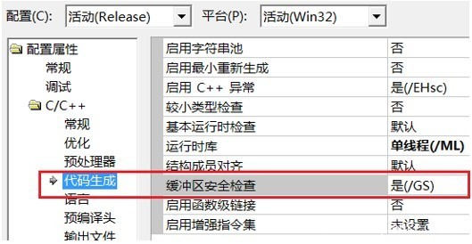
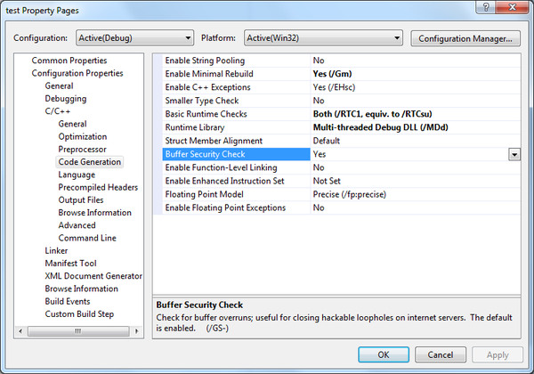
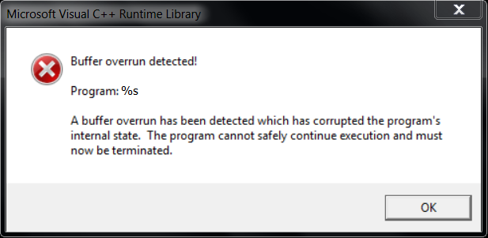

GS
GS- =
Buffer Security Check=缓冲区安全检查- 别称：
Stack cookieSecurity CookieOD、IDA中称为Security Cookie
GS cookie protectionGS security protection
- 别称：
- 是什么：一个编译器参数
- 功能和作用：用于缓存安全检查，检查缓存是否溢出
- 决定编译器是否生成用于检测是否发生了缓冲区溢出
buffer overruns的代码
- 决定编译器是否生成用于检测是否发生了缓冲区溢出
如何设置
Windows
IDE：
Visual Studio- 编译器：
MSVC Compiler- 编译器参数：
GS- 如何配置：
- 开启：
/GS- VS安全编译选项中的GS
- 
- VS安全编译选项中的GS
- 关闭：
/GS-
- 开启：
- 如何配置：
- 编译器参数：
代码中配置
文件级别
strict_gs_checkpragma- 语法
#pragma strict_gs_check( [ push, ] { on | off } )#pragma strict_gs_check( pop )
举例：
// pragma_strict_gs_check.cpp // compile with: /c #pragma strict_gs_check(on) void ** ReverseArray(void **pData, size_t cData) { // *** This buffer is subject to being overrun!! *** void *pReversed[20]; // Reverse the array into a temporary buffer for (size_t j = 0, i = cData; i ; --i, ++j) // *** Possible buffer overrun!! *** pReversed[j] = pData[i]; // Copy temporary buffer back into input/output buffer for (size_t i = 0; i < cData ; ++i) pData[i] = pReversed[i]; return pData; }
- 语法
- 函数级别
- 作用：指定某个函数不需要安全缓存检查
- 使用场景：你自己是个专家，会用手动做代码检查或者用其他手段确保代码很安全，无需检查
- 语法：
__declspec(safebuffers) - 举例：
// compile with: /c /GS typedef struct { int x[20]; } BUFFER; static int checkBuffers() { BUFFER cb; // Use the buffer... return 0; }; static __declspec(safebuffers) int noCheckBuffers() { BUFFER ncb; // Use the buffer... return 0; } int wmain() { checkBuffers(); noCheckBuffers(); return 0; }
- UI界面中配置
- 
- 编译器：
- Intel
- 编译器：
Intel C++ Compiler- 参数
Windows：- 语法：
/GS[:keyword]keyword：GS的leveloff->/GS[:off]：忽略，关闭GS- =
/GS-
- =
partial->/GS[:partial]：用Microsoft Visual Studio 2008的标准=levelstrong->/GS[:strong]：提供完整的安全检查，兼容最新版Microsoft Visual Studio的标准- =
/GS
- =
- 语法：
Linnux/macOS- 开启：
-fstack-security-check - 关闭：
-fno-stack-security-check
- 开启：
- 参数
- 编译器：
- 实现原理
- 图解
- 文字解释
- 内部是利用
GS缓存区=GS Buffers实现缓冲区溢出的检测 - 其在编译器检测到的易受缓冲区溢出攻击的函数中创建
security cookie- 如果攻击者写的代码，超过缓冲区长度，覆盖了
返回地址、异常处理程序的地址、易受攻击的函数参数，则运行时(runtime)会覆盖security cookie。- 运行时会在允许执行代码跳转到此地址或返回这些函数参数之前，检测
cookie的完整性，以避免攻击
- 运行时会在允许执行代码跳转到此地址或返回这些函数参数之前，检测
- 如果攻击者写的代码，超过缓冲区长度，覆盖了
- 内部是利用
- 图解
- 使用效果
- 运行时如果发生缓存区溢出会报错
- 
- 运行时如果发生缓存区溢出会报错
- =

如何绕开GS
- 利用未被保护的内存
- 系统为了将GS对性能的影响降到最小, 并不是所有的函数都会保护. 例如, 一个函数中不包含4字节以上的缓冲区时, 即使GS处于开启状态, 这个函数也是不受保护的. 因此, 可以针对这类函数, 构造巧妙的shellcode进行溢出
- 通过猜测cookies值
- GS保护机制采用了几个较弱的熵源，攻击者可以对其进行计算并使用计算结果来预测cookie值，但是这种犯法只适用于针对本地系统的攻击（攻击者拥有该机器的访问权限）
- 覆盖虚函数(指针)
- 程序只有在函数返回时, 才会去检查
Security Cookie，而我们在程序检查Security Cookie之前劫持程序流程的话，就可以实现对程序的溢出。例如使用C++的虚函数溢出即可实现上述功能- 校验Security Cookie
- 校验Security Cookie
- 程序只有在函数返回时, 才会去检查
- 攻击异常处理
- GS机制没有对
SEH提供保护, 因此可以通过攻击程序的异常处理机制达到绕过GS的目的. 通过构造超长的字符串覆盖掉异常处理指针, 然后触发一个异常, 程序就会转入异常处理; 由于异常处理指针已被覆盖, 因此可以通过劫持SEH来控制程序的后续流程.
- GS机制没有对
- 同时替换栈和
.data中的Cookie- 若要在
Security Cookie正常工作的情况下实现绕过, 由于Cookie具有很强的随机性, 难以猜测, 所以只能同时替换栈和.data中的Cookie实现绕过. 构造特殊的shellcode使用相同的值覆盖栈和.data中的Cookie, 即可实现GS绕过.
- 若要在

相关知识
gcc编译器参数：fstack-protector
- gcc通用编译参数
fstack-protector- 功能：开启或关闭某些或所有函数的栈溢出的安全检查
- 语法
Linux/macOS- 语法
- 开启：
-fstack-protector[-keyword] - 关闭：
-fno-stack-protector[-keyword]
- 开启：
- 解释
keywordstrong->-fstack-protector-strong：任何类型的缓存(any type of buffer)都进行栈的溢出的安全检查all->-fstack-protector-all：每个函数(every routine)都进行安全检查- 无参数->
-fstack-protector：对于每个字符串缓存(string buffer)的栈溢出进行安全检查
- 语法
- 内部实现
- 优先用
gcc/glibc的实现- 如果没有，其次用
Intel的实现- 等价于
-fstack-security-check
- 等价于
- 如果没有，其次用
- 优先用